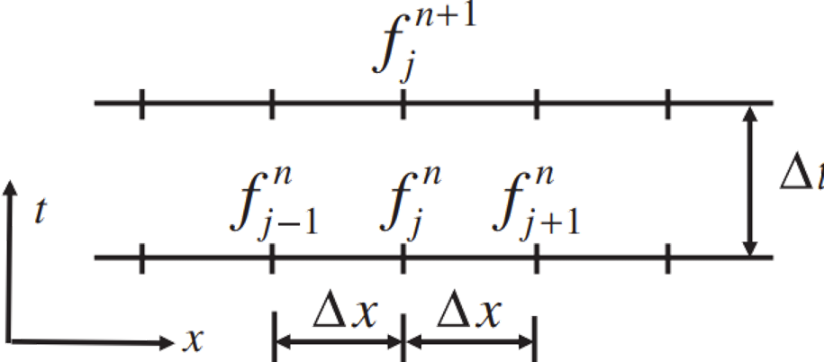

Finite Difference Approximation
The Finite Difference Method is the oldest method for numerical solution of PDE's, believed to have been introduced by Euler in the 18th century. It is also the easiest method to use for simple geometries.
The starting point is the conservation equation in differential form. The solution domain is covered by a grid. At each grid point, the differential equation is approximated by replacing the partial derivatives by approximations in terms of the nodal values of the functions.
The resut is one algebraic equation per grid node
We solve $$
\frac{\partial f}{\partial t}
+ U \frac{\partial f}{\partial x}
= D \frac{\partial^2 f}{\partial x^2}
$$ numerically on the discrete grid
Here the spatial dimension (horizontal axis) is discretized by grid points labeled $j = 1 \ldots N$ that are assumed to be evenly spaced and separated by $\Delta x$. If the coordinate of point $j$ is $x_j$, then the coordinates of point $j+1$ is $x_j + \Delta x$, and so on. Time is indicated by the vertical axis and $f$ at the current time $t$ is denoted by superscript $n$, and the next one, at time $t + \Delta t$, is denoted by $n+1$

At grid point $j$ at time $n$
$$
\left.\frac{\partial f}{\partial t}\right)_{j}^{n}
+ U \left.\frac{\partial f}{\partial x}\right)_{j}^{n}
= D \left.\frac{\partial^{2} f}{\partial x^{2}}\right)_{j}^{n}
$$
To approximate the derivatives based on the discrete values of $f$ that are available to us we use a Taylor series
◀
▶